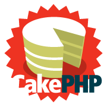

CakePHP
CakePHP - це програмний каркас для створення веб-додатків, написаний на мові PHP і побудований на принципах
відкритого ПЗ. CakePHP реалізує патерн «Модель-Вид-Контролер» (MVC).
Спочатку створювався як клон популярного Ruby on Rails, і багато ідей були
запозичені саме звідти:
- Своя файлова структура
- Підтримка безлічі плагінів
- Абстракція даних (PEAR :: DB, ADOdb, і власна розробка Cake)
- Підтримка безлічі СУБД (PostgreSQL, MySQL, SQLite), може бути підключений до інших СУБД, наприклад
Firebird
CakePHP відрізняється від інших своїх побратимів (Symfony, PHPonTrax) тим, що він повністю сумісний як з
PHP4 так і з PHP5.
Дізнатись більше про CakePHP
django
Django - вільний фреймворк для веб-додатків на мові Python, що використовує шаблон
проектування MVC. Проект підтримується організацією Django Software Foundation.
Сайт на Django будується з одного або декількох додатків, які рекомендується робити відчужуваними і
підключаються. Це одне з істотних архітектурних відмінностей цього фреймворка від деяких інших (наприклад,
Ruby on Rails). Один з основних принципів фреймворка - DRY (англ. Don't repeat
yourself)
Також, на відміну від інших фреймворків, обробники URL в Django конфигурируются явно за допомогою регулярних
виразів.
Для роботи з базою даних Django використовує власний ORM, в якому модель даних описується класами
Python, і по ній генерується схема бази даних.
Дізнатись більше про django

Ruby on Rails
Ruby on Rails (RoR) - фреймворк, написаний на мові програмування Ruby, реалізує архітектурний шаблон
Model-View-Controller для веб-додатків, а також забезпечує їх інтеграцію з веб-сервером і сервером баз даних.
Є відкритим програмним забезпеченням і розповсюджується під ліцензією MIT.
Створено Давидом Хейнемейер Ханссоном на основі його роботи в компанії 37signals над засобом управління
проектами Basecamp і випущений в липні 2004 року. 23 грудня 2008 роки команда проекту Merb об'єдналася з
командою Rails з метою створення наступної версії Rails 3, яка об'єднає в собі кращі риси обох фреймворків.
Базується на таких принципах розробки додатків:
- максимальне використання механізмів повторного використання, що дозволяють мінімізувати дублювання
коду в додатках (принцип Don't repeat yourself);
- за замовчуванням використовуються угоди по конфігурації, типові для більшості додатків (принцип
Convention over configuration) - явна специфікація конфігурації потрібно тільки в нестандартних
випадках.
Дізнатись більше про Ruby on Rails

Spring
Spring Framework (або коротко Spring) - універсальний фреймворк з відкритим вихідним кодом для
Java-платформи. Також існує форк для платформи .NET Framework, названий Spring.NET.
Перша версія була написана Родом Джонсоном, який вперше опублікував її разом з виданням своєї книги
«Expert One-on-One Java EE Design and Development» (Wrox Press, жовтень 2002 року).
Фреймворк був вперше випущений під ліцензією Apache 2.0 license в червні 2003 року. Перша стабільна версія
1.0 була випущена в березні 2004. Spring 2.0 був випущений в жовтні 2006, Spring 2.5 - в листопаді 2007,
Spring 3.0 в грудні 2009, і Spring 3.1 в грудні 2011. Поточна версія - 5.3.x.
Незважаючи на те, що Spring не забезпечував якусь конкретну модель програмування, він став широко поширеним
в Java-співтоваристві головним чином як альтернатива і заміна моделі Enterprise JavaBeans. Spring надає велику
свободу Java-розробникам в проектуванні; крім того, він надає добре документовані і легкі у використанні засоби
вирішення проблем, що виникають при створенні додатків корпоративного масштабу.
Тим часом, особливості ядра Spring застосовні в будь-якому Java-додатку, і існує безліч розширень і удосконалень
для побудови веб-додатків на Java Enterprise платформі. З цих причин Spring набув великої популярності і визнається
розробниками як стратегічно важливий фреймворк.
Дізнатись більше про Spring

Node.js
Node або Node.js - програмна платформа, заснована на движку V8 (здійснює трансляцію
JavaScript в машинний код), що перетворює JavaScript
з вузькоспеціалізованого мови в мову загального призначення. Node.js додає можливість
JavaScript взаємодіяти з пристроями введення-виведення через свій API,
написаний на C++, підключати інші зовнішні бібліотеки, написані на різних мовах, забезпечуючи виклики до них з
JavaScript-коду. Node.js застосовується переважно на сервері, виконуючи
роль веб-сервера, але є можливість розробляти на Node.js і десктопні віконні додатки (за допомогою NW.js, AppJS
або Electron для Linux, Windows і macOS) і навіть програмувати мікроконтролери (наприклад, tessel, low.js і
espruino). В основі Node.js лежить подієво-орієнтоване і асинхронне (або реактивне) програмування з неблокуючим
введенням/виведенням.
Дізнатись більше про Node.js

ASP.NET
ASP.NET (Active Server Pages для .NET) - платформа розробки веб-додатків на C#, до складу якої входить:
веб-сервіси, програмна інфраструктура, модель програмування, від компанії Майкрософт. ASP.NET входить до складу
платформи .NET Framework і є розвитком старішої технології Microsoft ASP.
ASP.NET зовні багато в чому зберігає схожість із старішою технологією ASP, що дозволяє розробникам відносно
легко перейти на ASP.NET. У той же час внутрішній устрій ASP.NET істотно відрізняється від ASP, оскільки вона
заснована на платформі .NET і, отже, використовує всі нові можливості, що надаються цією платформою.
Дізнатись більше про ASP.NET